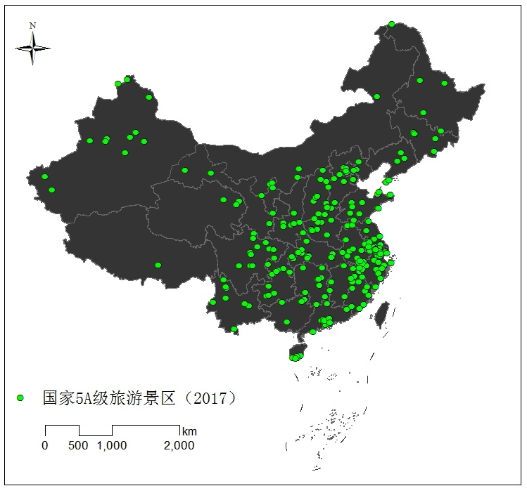
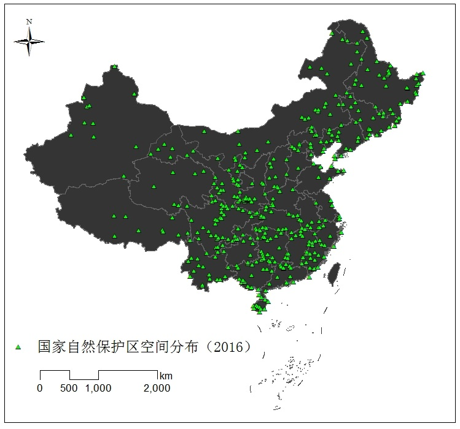
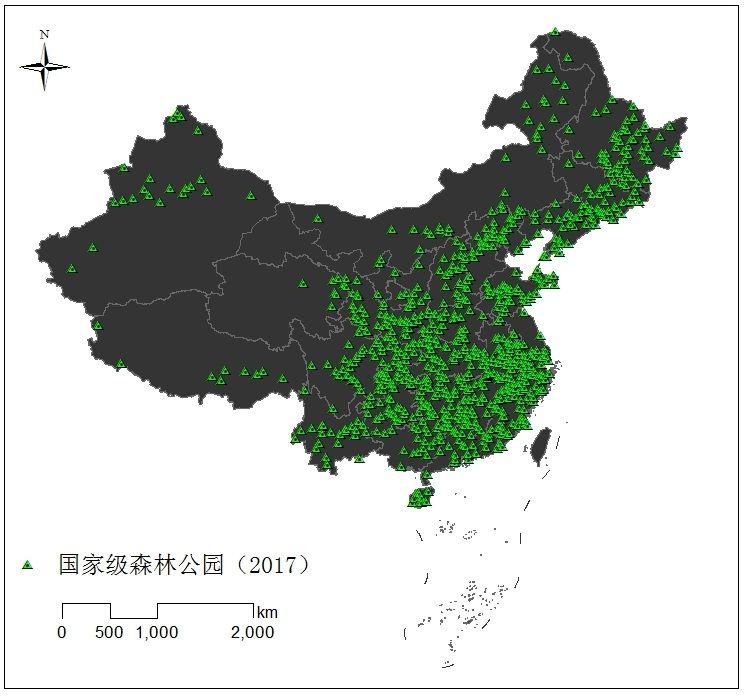
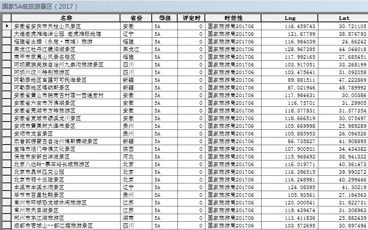
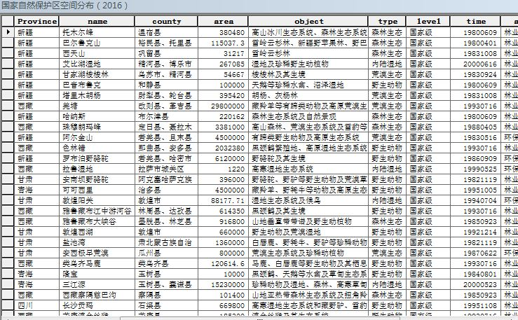

国家生态景观园林等空间分布与统计数据
Spatial distribution and statistical data of national ecological landscape
数据介绍
国家生态、景观、园林等空间分布点数据与统计数据，主要包括国家5A级旅游景区、国家地质公园、国家级森林公园、国家自然保护区、全国风景名胜、第一批至第八批全国文保单位等，数据来源于文化和旅游部等官方网站发布的相关信息，通过地理编码等处理，制作形成空间分布矢量数据点。
数据属性
空间范围：全国
时间范围：2006-2019年
空间分辨率：---
数据类型：矢量|ESRI shapefile point
投影坐标：GCS地理坐标系统(大地2000)
数据示例图
|  |  |  | <
|  |  |  |
数据下载
国家生态、景观、园林等空间分布与统计数据
该数据为“有限共享”数据，不提供直接数据下载链接，如果有需要可以联系邮箱 gispie@163.com（或QQ 2783343898、新浪微博私信@斩之浪），获取下载口令~
数据获取流程可参考本站数据共享说明
数据列表
| 编号 | 名称 | 时间 | 示例图 | 数量 | 共享口令 | 下载 |
|---|
建议使用Google浏览器，IE内核浏览器可能不正常显示下载按钮等！
Fighting, GISer!
最新博文